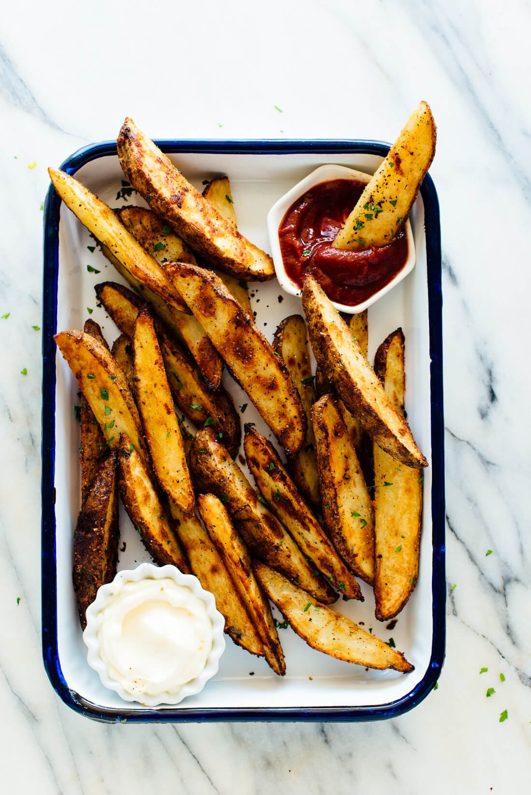

Potato Wedges

Description
These crispy potato wedges make a great healthy alternative to fries.
And they taste better too!
Credit: cookieandkate.com
Ingredients
- 2 pounds Russet potatoes (6 smallish or 4 medium), scrubbed clean (I didn’t peel mine)
- 3 tablespoon olive oil
- 2 teaspoon garlic powder
- 2 teaspoon onion powder
- 1 teaspoon fine sea salt
- Freshly ground black pepper
- 2 tablespoon finely chopped fresh parsley, optional
Steps
- Preheat the oven to 400 degrees Fahrenheit and line a large, rimmed baking sheet with parchment paper for easy clean-up.
- Cut each potato in half lengthways, then in half lengthways again to make quarters, and then cut each half in half lengthways on the diagonal to make two wedges (you’ll end up with 8 wedges per potato; make sure they are about the same thickness and size).
- Place the sliced potatoes into a large bowl and cover them with hot water (I used hot water from the tap, but others have suggested that pipes can leach impurities into hot water, so it may be best to use cool tap water that has been heated on the stove). Let them soak for 10 minutes.
- Drain the potatoes and lightly pat them dry with a lint-free tea towel. Place the potato wedges on the prepared pan and drizzle them with the olive oil. Sprinkle the garlic powder, onion powder, salt and a generous amount of pepper on top.
- Toss until the potatoes are evenly coated in oil and spices, then arrange them in even columns across the pan so each wedge has a cut side against the pan. (If they don’t all fit in an even layer across your pan, you’ll need to use two pans for this recipe—divide them evenly across both pans, and rotate the pans when you flip the potatoes halfway through baking. They may be done baking earlier than specified below so keep an eye on them toward the end.)
- Bake for 30 minutes, then flip the wedges over (use a spatula and you should be able to flip several at a time). Arrange them in an even layer and return the pan to the oven.
- Bake until the wedges are deeply golden, crisp and easily pierced through by a fork, about 25 to 30 more minutes (the fries near the outside of my pan were done at 25, so I removed them and put the pan back in the oven for 5 more minutes to finish off the rest).
- Sprinkle with parsley, if desired, and serve while hot.